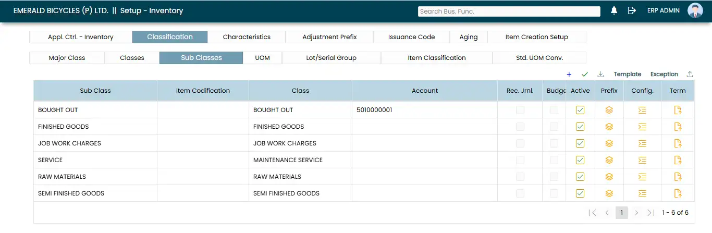
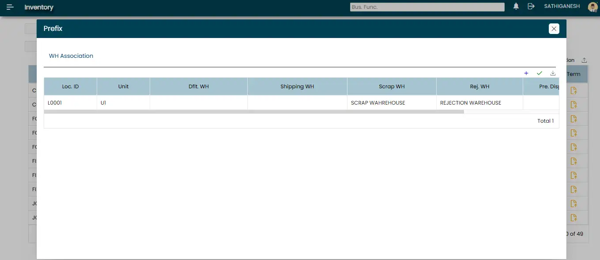
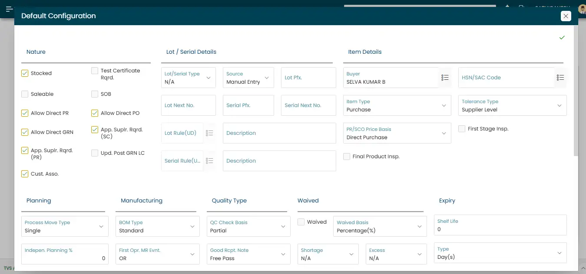

<div data-category="Inventory Control" data-title="Sub Classes" data-updated="January 27, 2026" data-contributors="RoadmapIT" data-breadcrumb="Home,Inventory Control,Sub Classes">
  <div class="page-content">
    <p>A Subclass is a category or type of inventory items that have more specific characteristics than the Class they belong to. A Subclass helps to refine and differentiate the inventory items more precisely and accurately. A Subclass can also have child records, which are the inventory items that are assigned to the Subclass.</p>
    <p>The Subclasses are defined in this screen and the classes defined are associated with its corresponding subclasses.</p>
    <h5>Navigation path:</h5>
    <p class="fs-6">Supply Chain Management \ Inventory \ Setup \ Setup - Inventory</p>
    
    <ul style="list-style-type: none; align-content: center">
      <li class="mouse-icon">
        Click
        <i class="bi bi-plus fs-4 mx-2 text-primary"></i>
        button to create a new Subclass
      </li>
      <li class="mouse-icon">Enter the Subclass</li>
      <li class="mouse-icon">Enter Item Codification</li>
      <li class="mouse-icon">Enter/Select the Class</li>
      <li class="mouse-icon">Enable the Active flag</li>
      <li class="mouse-icon">
        Save
        <i class="bi bi-check-lg fs-4 mx-1 text-success"></i>
        the Class & Finally Check the Active Flag
      </li>
    </ul>
    
    <ul style="list-style-type: none; align-content: center">
      <li class="mouse-icon">Click on Prefix. Button to map the default unit Location, Default Warehouse, Shipping Warehouse, Scrap Warehouse, Rej WH</li>
    </ul>
    
    <ul style="list-style-type: none; align-content: center">
      <li class="mouse-icon">Click the Config. button to define default configuration for the sub class</li>
      <li class="mouse-icon">Select the Lot/Serial Type based on requirements.</li>
      <li class="mouse-icon">Select the Lot Serial Source.</li>
      <li class="mouse-icon">Select the Cons. Prod Type based on Push or Pull Item.</li>
      <li class="mouse-icon">Select the Cons. SCO type based on Push or Pull Item for SC type.</li>
      <li class="mouse-icon">Select the Cost Method type if required.</li>
      <li class="mouse-icon">Select the Tolerance type if Tolerance is required for an item.</li>
      <li class="mouse-icon">Select the PR/SCO Price Basis for the sub class</li>
      <li class="mouse-icon">Select the Saleable flag if the Item is Saleable.</li>
      <li class="mouse-icon">Select the Item type based on requirements.</li>
      <li class="mouse-icon">Select the FG Receipt Mode based on production order requirements.</li>
      <li class="mouse-icon">Select the Indicator for Sales order requirements.</li>
      <li class="mouse-icon">Select the MRP planning type based on Production requirements.</li>
      <li class="mouse-icon">Select the Strategy type based on Production requirements.</li>
      <li class="mouse-icon">Under Quality Tab selects the type for Inspection Purpose.</li>
      <li class="mouse-icon">Define HSN code based on requirement.</li>
    </ul>
  </div>
</div>
